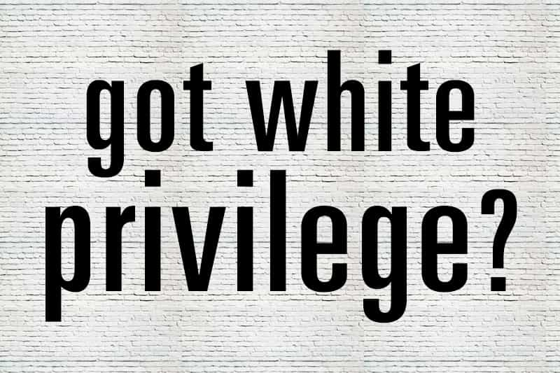

< < < Back
Why Isn’t Anyone In The Establishment Talking About Jewish And Asian Privilege? – Return Of Kings
When people of African descent speak to me about white privilege, it’s one thing, however much I find the concept deeply flawed. But when Jews and Asians, two groups which earn more than whites, talk about it, it truly enters the realm of the absurd. These people are so institutionally oppressed that, on average, they earn more than the people whom society supposedly elevates to the most special of categories.
In recent times, 44% of Jewish households earned over $100,000 annually, two and a half times the national average and still significantly more than gentile whites. The “masters” of American political and social life, white mainline Protestants (pejoratively called WASPs), were only half as likely to be in this category of household wealth.
Similar privilege can be found amongst Asians in the United States. Asian-American men earn one-fifth more than white American men and Asian-American women are effectively at parity with white American men. In a recent article for Forbes, by no means a friend of ROK because of its biased “reporting” on our Star Wars: The Force Awakens coverage, Tim Worstall points out statistics showing that white men earn just 83 cents for every dollar earned by Asian men in America. Worstall drew his figures from Mark J. Perry, Professor of Economics and Finance at the University of Michigan.
If structural racism against Gentile whites in the United States is less than a thimble’s worth or non-existent, how can two groups like Jews and Asians earn so much more than them?
What happened to context and reporting figures properly?

Nope, I don’t. And neither do you.
Let’s be clear here: there are millions of non-privileged Jews and Asians in the United States and other Western nations. Poor Jews and Asians share the same miseries as poor whites, Latinos and blacks. Yet this is precisely the sort of context those who claim white privilege exists refuse to admit or insert into their arguments. The white garbage collector from Staten Island somehow benefits from the same invisible force as trust fund baby Mitt Romney.
I do not dispute that Jews and Asians receive better test scores, grades and other indications of academic achievement. But why? Well, to start off with, their parents are unsurprisingly much more likely to not only have a good education but also a good job. The privilege this creates is no different from a WASP family who passes on their wealth and non-genetic family traits to their children. In addition, because of years of pseudo-moral arguments about “white racism,” it is presumed that at least 25% of the rationale behind a white getting his job is based on his race, not his qualifications, experience, or other attributes.
Despite no evidence that Jews faced markedly greater social and economic barriers in the first half of the 1900s than Irish or Italians in America, who were the subject of repeated immigration control attempts by authorities, they have been elevated to a superior level of victimhood. Similarly, the internment of Japanese families during the Second World War is used to argue that America was and still is irrefutably racist, even during the 1990s, 2000s and now 2010s. This ignores the fact that internment was a fate faced by a number of German and Italian immigrants, or their first and second generation descendants.
Gerrymandering white privilege arguments
White male privilege in action.
There are a number of devices those believing in white privilege use to make their position seem more realistic. One of the most potent, as Seth Rogen illustrated last year, is to count Jews, whose phenotypes are usually white, as Caucasians:
The benefits of this approach are obvious. If Jews are counted as whites, thorny questions about things such as their overrepresentation in higher education, including the Ivy League, can be averted. Harvard had a student body that was 25% Jewish according to 2013 figures. Yet Jews are only about 2.5% of the population and Harvard draws from across America, and even the world (the world being much less Jewish than even the United States). The numbers for Yale and Columbia were 27% and 30% respectively.
Leaving Jews to the side for a moment, Asians are around 4-5% of the US population and accounted for over 20% of Harvard College admissions for the class of 2019. People have alleged that Harvard and other Ivy League schools discriminate against Asians, requiring them to have much higher SAT scores and other measures than non-Asians. But if your race is roughly four times more represented at a place like Harvard, it is difficult to argue that racism is rife in the United States.
A sad state of affairs
Again, in trying to refute the idea that white privilege is a myth, critics will no doubt raise certain aspects of US history, however far back into the past they need to sift. They will re-raise Franklin Roosevelt’s wartime internment of Japanese-Americans (once is not enough, clearly), Sinophobia during the Californian Gold Rush, or the hostile reception meted out to Jewish immigrants to America in the late 19th and early 20th centuries, even though they had just escaped the pogroms of the old Russian Empire. And all this does not even broach the topic of slavery. Regrettable things have happened in America over hundreds of years, but the notion that white privilege is pervasive is no less a fairytale than the stories of Pinocchio or Cinderella.
These critics could also reference individual instances of racism in a country comprising over 300 million people to claim that racial bigotry and white privilege are rife. Whether through a swastika hoax in a university dorm or a random white man beating up an Asian kid, though, such assertions about society-wide hatred by whites and a system of privilege reserved for them are all drivel.
White privilege is nearly as outdated and false as the claim that the sun revolves around the world. It is nothing but a lie liberals tell their children and, worse still, yours, whenever they get their hands on them through popular culture or the education system.
 If you like this article and are concerned about the future of the Western world, check out Roosh's book Free Speech Isn't Free. It gives an inside look to how the globalist establishment is attempting to marginalize masculine men with a leftist agenda that promotes censorship, feminism, and sterility. It also shares key knowledge and tools that you can use to defend yourself against social justice attacks. Click here to learn more about the book. Your support will help maintain our operation.
If you like this article and are concerned about the future of the Western world, check out Roosh's book Free Speech Isn't Free. It gives an inside look to how the globalist establishment is attempting to marginalize masculine men with a leftist agenda that promotes censorship, feminism, and sterility. It also shares key knowledge and tools that you can use to defend yourself against social justice attacks. Click here to learn more about the book. Your support will help maintain our operation.
Read More: I Was Mugged And My White Privilege Was to Blame